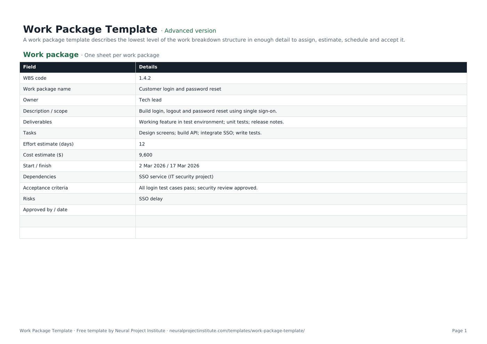

Free Work Package Template with Example (Excel, Sheets, PDF)
This free work package template describes one piece of project work on a single page: its WBS code, scope, deliverables, tasks, owner, effort and cost estimates, dates, dependencies, risks, acceptance criteria and sign-off. Download it in Google Sheets, Excel or PDF at beginner, advanced or expert level, with a worked example and no sign-up.

Key takeaways
- A work package is the lowest level of the work breakdown structure: a chunk of work small enough to assign to one owner, estimate, schedule and accept.
- The template has 13 fields, from WBS code and scope to acceptance criteria and approval, on one tab with a filled-in example.
- Use one tab per work package and copy the WBS code and name straight from your WBS so everything traces back.
- A common rule of thumb is 8 to 80 hours of effort, or no longer than one reporting period.
- Testable acceptance criteria and a named approver make progress objective and stop arguments at hand-over.
Free download · no sign-up
Get the work package template
Pick your level and format: Google Sheets, Excel or a print-ready PDF. Spreadsheets include dropdowns, formulas and sample rows you can overwrite.
What is a work package?
A work package is the work at the lowest level of a work breakdown structure (WBS). PMI's PMBOK Guide defines it as the work defined at the lowest level of the WBS for which cost and duration are estimated and managed. In practice it is a clearly bounded piece of work with one owner, a defined output and an agreed way to check that it is finished.
The WBS shows the whole hierarchy of deliverables. The work package description, which is what this template produces, zooms in on one box of that hierarchy and records everything the person doing the work needs to know: what is in scope, what they must deliver, roughly how long it will take and cost, what it depends on and how it will be accepted.
The work package owner (often a team lead, team manager or supplier) is accountable for delivering it. The project manager agrees and authorises the package, and an approver signs it off. On larger projects, work package descriptions are often collected into a WBS dictionary, which holds the detail for every element of the WBS.
For the concept in more depth, read our guide to what a work package is.
What is in this work package template
The template has one tab, Work package, laid out as a simple form with two columns: Field and Details. It comes with a worked example (a customer login feature) that you overwrite with your own work. Here is a live preview:
| Field | Details |
|---|---|
| WBS code | 1.4.2 |
| Work package name | Customer login and password reset |
| Owner | Tech lead |
| Description / scope | Build login, logout and password reset using single sign-on. |
| Deliverables | Working feature in test environment; unit tests; release notes. |
| Tasks | Design screens; build API; integrate SSO; write tests. |
Sample rows are examples: replace them with your own.
- Work package: Field, Details
The 13 fields
- WBS code: the reference from your WBS, for example 1.4.2, so the package traces back to its parent deliverable.
- Work package name: a short noun phrase that matches the WBS entry.
- Owner: the one person accountable for delivering the package.
- Description / scope: what the work covers, and where useful what it does not cover.
- Deliverables: the outputs that will exist when the package is finished.
- Tasks: the main activities needed to produce the deliverables.
- Effort estimate (days): the total working days of effort, not elapsed time.
- Cost estimate ($): labour plus any materials, equipment or services. Change the currency label if you work in another currency.
- Start / finish: the planned dates from your schedule.
- Dependencies: other packages, projects, suppliers or decisions this work relies on.
- Acceptance criteria: the testable conditions the output must meet to be accepted.
- Risks: the main threats to the package; record them in full in your risk register.
- Approved by / date: who signed the package off and when.
Blank rows sit under the fields so you can add your own, such as budget code, tolerances or reporting frequency.
Beginner, advanced and expert versions
| Version | What you get | Best for |
|---|---|---|
| Beginner | The one-tab work package form with all 13 fields, the worked example and extra blank rows | Quick, informal hand-overs |
| Advanced | The same one-tab, 13-field form: the standard version | Most projects |
| Expert | The work package form plus an Instructions tab (steps and tips) and a Revision history tab for version, date, author, changes and approver | Projects with formal sign-off, audits or a PMO |
Because the work package is a two-column form, the beginner and advanced versions contain the same fields. The template has no status column, so the expert version does not include a dashboard; track the status of all your packages in your WBS or project schedule template instead. The PDF is a print-ready copy for kick-off meetings and sign-off.
How to fill in the work package template
- Start from the WBS. Copy the WBS code and name from your work breakdown structure template. Write one work package description for each lowest-level element that needs one.
- Agree the owner. Name one person, not a team. Talk to them before you write the rest; they know the work better than you do.
- Describe the scope. Say what is included and, if there is room for doubt, what is excluded. Check it against your project scope statement.
- List the deliverables, then the tasks that produce them. Keep tasks at a level the owner recognises; the detailed task list can live in their own plan.
- Estimate effort and cost with the owner, using past data or effort estimation techniques such as analogous or three-point estimates.
- Add dates and dependencies from your schedule, and record anything outside the owner's control that the package relies on.
- Write acceptance criteria and risks. Make every criterion testable, and copy the significant risks to your risk register template.
- Agree and approve. Walk through the package with the owner and approver, then record the approval and date before work starts. After that, changes go through change control.
Spreadsheet tips
- Duplicate the tab for each package and rename it with the WBS code (1.4.2, 1.4.3) so the tabs sort in WBS order.
- Use the same units everywhere. If effort is in days on one package, do not switch to hours on the next; the totals will not add up.
- Roll the numbers up. Copy each package's effort and cost into your project cost estimate template so the project budget is built from the bottom up.
- Keep it to one page. If it runs longer, the package is probably too big.
Work package example
The template's sample package is a software feature, but the same structure works for a construction stage, a marketing campaign asset or a training course. Here is the example with a note on why each entry works:
| Field | Example entry | Why it works |
|---|---|---|
| WBS code / name | 1.4.2 Customer login and password reset | Traces directly to the WBS |
| Owner | Tech lead | One accountable role (use a named person in your own file) |
| Description / scope | Build login, logout and password reset using single sign-on | Short and specific about what is in scope |
| Deliverables | Working feature in test environment; unit tests; release notes | Outputs you can see and check |
| Tasks | Design screens; build API; integrate SSO; write tests | Enough to estimate, not a full task list |
| Effort / cost | 12 days; 9,600 | Estimated by the person doing the work |
| Start / finish | 2 Mar 2026 / 17 Mar 2026 | About two weeks: easy to track |
| Dependencies | SSO service (IT security project) | Names an outside dependency to watch |
| Acceptance criteria | All login test cases pass; security review approved | Objective pass or fail tests |
| Risks | SSO delay | Linked to the dependency; add it to the risk register |
The approval field is blank in the example: fill it in only when the owner and approver have agreed the package.
How big should a work package be?
There is no fixed standard, but two rules of thumb are widely used:
- The 8/80 rule: a package should take at least 8 hours and no more than 80 hours of effort. Smaller than that and you are managing tasks, not packages; larger and it becomes hard to estimate and track.
- The reporting period rule: a package should be no longer than one reporting period (often two weeks or a month), so every status report shows it as either started, finished or clearly late.
Treat these as guides rather than limits; a large engineering project may hand a contractor packages of several hundred hours.
Signs you should split or merge a package
- Split it if it has more than one owner, several unrelated deliverables, an estimate nobody is confident about or a duration longer than your reporting cycle.
- Merge it if it is only a few hours of work, has no separate deliverable or would be tracked by the same person alongside its neighbour anyway.
Writing good acceptance criteria
Acceptance criteria turn "done" into something you can check. Write them so that the owner and approver would reach the same answer independently:
| Weak criterion | Stronger criterion |
|---|---|
| Login works well | All 24 login test cases pass in the test environment |
| Secure | Security review completed and approved by the IT security lead |
| Documentation provided | Release notes published to the team wiki and reviewed by support |
| Wall built to standard | Wall inspected and signed off against drawing A-104 by the site engineer |
Criteria can cover functionality, quality standards, documentation and approvals. For quality-critical work, link the criteria to your quality plan, and see our guide to project deliverables for how deliverables are accepted at project level.
Work packages in PRINCE2
In PRINCE2 a work package is a formal management product. Under the Controlling a Stage process, the project manager authorises a work package; under Managing Product Delivery, the team manager accepts it, agreeing that it is understood and achievable, and then delivers it. The team manager reports progress through checkpoint reports at the frequency set in the work package.
Our template covers the core of a work package description. To use it as a PRINCE2 work package, add rows for:
- Product descriptions for the products to be delivered, including quality criteria
- Tolerances for time and cost (and scope, risk or quality if you use them)
- Reporting arrangements, including checkpoint frequency
- Constraints and techniques or quality methods to be used
- Problem handling and escalation: how issues and risks are raised to the project manager
Your organisation may have its own PRINCE2 format; if so, follow it.
Work packages in Agile projects
Agile teams rarely use the term work package, but the idea still applies. An epic or feature plays a similar role: a bounded chunk of value, broken down into smaller items and accepted against agreed criteria and the Definition of Done.
Where Agile and traditional teams work together, for example when a supplier delivers a fixed piece of work into an Agile programme, a one-page work package is a useful contract between them. For planning the Agile side, use our agile project plan template.
Work package vs task vs WBS
| Term | What it is | Typical size | Owned by |
|---|---|---|---|
| WBS | The full hierarchy of project deliverables | The whole project | Project manager |
| Control account | A management point that groups work packages for cost and schedule control, used in earned value management | Several packages | Control account manager |
| Planning package | A WBS element with known scope but not yet detailed into work packages | Varies | Project manager |
| Work package | The lowest WBS level, estimated, scheduled and accepted as a unit | Days to a few weeks | Work package owner |
| Task or activity | A step needed to complete a work package | Hours to days | Team member |
Work packages describe what is delivered; tasks describe how it gets done. Tasks are what you sequence and resource in the schedule. Our guide to project tasks and activities explains the difference in more detail, and earned value management shows how control accounts and work packages are used to measure performance.
Common work package mistakes
- No single owner. "Development team" is not an owner; name one person.
- Scope that overlaps another package. Every piece of work should belong to exactly one package, or it gets done twice or not at all.
- Estimates made without the owner. People commit to estimates they helped make.
- Vague acceptance criteria. "To the client's satisfaction" invites disputes.
- Hidden dependencies. If the package relies on another team, supplier or decision, write it down and track it in the schedule. See task dependencies.
- Starting before approval. Without sign-off you have no agreed baseline to measure against.
- Never updating it. If scope, dates or estimates change, record the change and a new version rather than editing silently.
Related templates and guides
A work package sits in a chain of planning documents. Build the hierarchy in the WBS template, list outputs in the project deliverables template, assign roles with a RACI matrix template and record approved changes with a change request template.
 Work Breakdown Structure (WBS) TemplateFree work breakdown structure template with WBS codes, levels, deliverables, owners,…Beginner · Advanced · Expert
Work Breakdown Structure (WBS) TemplateFree work breakdown structure template with WBS codes, levels, deliverables, owners,…Beginner · Advanced · Expert Project Schedule TemplateFree project schedule template with tasks, durations, dependencies, start and end dates,…Beginner · Advanced · Expert
Project Schedule TemplateFree project schedule template with tasks, durations, dependencies, start and end dates,…Beginner · Advanced · Expert Project Deliverables TemplateFree project deliverables template to list each deliverable with owner, due date,…Beginner · Advanced · Expert
Project Deliverables TemplateFree project deliverables template to list each deliverable with owner, due date,…Beginner · Advanced · Expert Project Cost Estimate TemplateFree project cost estimate template: labour, materials, equipment and other costs by work…Beginner · Advanced · Expert
Project Cost Estimate TemplateFree project cost estimate template: labour, materials, equipment and other costs by work…Beginner · Advanced · Expert Project Plan TemplateFree project plan template with goals, scope, deliverables, tasks, owners, dates and…Beginner · Advanced · Expert
Project Plan TemplateFree project plan template with goals, scope, deliverables, tasks, owners, dates and…Beginner · Advanced · Expert Project Charter TemplateFree project charter template covering purpose, objectives, scope, milestones, budget,…Beginner · Advanced · Expert
Project Charter TemplateFree project charter template covering purpose, objectives, scope, milestones, budget,…Beginner · Advanced · ExpertFrequently asked questions
What is a work package template?
A work package template is a ready-made form for describing one work package: its WBS code, scope, deliverables, tasks, owner, effort and cost estimates, dates, dependencies, risks, acceptance criteria and approval.
Is this work package template free?
Yes. The work package template is free to download in Google Sheets, Excel and PDF, at beginner, advanced and expert level, with no sign-up.
What should a work package include?
At minimum: a WBS code and name, an owner, a description of scope, deliverables, effort and cost estimates, start and finish dates, dependencies and acceptance criteria. Many organisations add risks, tolerances, reporting arrangements and an approval record.
How big should a work package be?
A common rule of thumb is 8 to 80 hours of effort, or no longer than one reporting period. Larger projects sometimes use bigger packages; the test is whether one owner can estimate, track and deliver it.
What is the difference between a work package and a task?
A work package defines a deliverable-focused chunk of work at the lowest level of the WBS. Tasks or activities are the steps needed to complete it, and are what you schedule in detail.
What is the difference between a work package and a WBS?
The WBS is the whole hierarchy of project deliverables. A work package is one element at the bottom of that hierarchy, described in detail.
Who owns a work package?
One named work package owner, such as a team lead, team manager or supplier, is accountable for delivering it. The project manager agrees and authorises it.
Can I use this template as a PRINCE2 work package?
Yes, as a starting point. Add rows for product descriptions, tolerances, reporting arrangements, constraints, quality methods and problem handling, or follow your organisation's PRINCE2 format.
Is a work package the same as a WBS dictionary entry?
They are closely related. A WBS dictionary holds the detailed description of every WBS element; a work package description like this one is the entry for one lowest-level element, often with extra detail for authorising the work.
Can I use work packages in Agile projects?
Yes. Epics or features play a similar role, and a work package is useful when a supplier or traditional team delivers a defined piece of work into an Agile project.
How do I manage several work packages in one file?
Duplicate the Work package tab for each package and name each tab with its WBS code. Track the status of all packages in your WBS or project schedule.
What goes in the acceptance criteria of a work package?
Clear, testable conditions the output must meet, such as tests passed, standards met, documents delivered and approvals obtained.
What is the difference between the beginner, advanced and expert work package template?
All three contain the same one-tab, 13-field work package form with a worked example. The expert version adds an Instructions tab with steps and tips and a Revision history tab for recording versions and approvals.